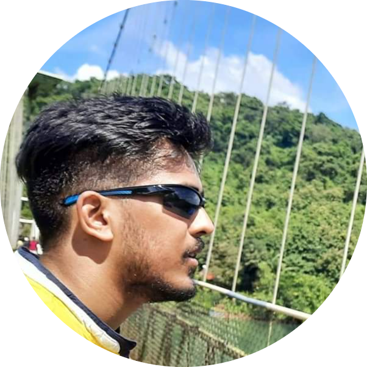

Hi , I'm Nithin Kumar
ASIC Verification Engineer | Python Developer | Web designer
About Me
Hi there, nice to meet you. First of all, thanks for taking time to know more about me. My name is Nithin Kumar M and i am from Bangalore, Karnataka (India). My hometown is Mysore. I have completed my Bachelors of Engineering(B.E) from M.S.Ramaiah Institute of Technology.
I've spent 6+ years working across different Design and Performance verification projects at IP and SOC level. I have good knowledge on the Verification cycle , Industry standard protocols, ARM Architecture , System Verilog, Universal Verification Methodology, Python and Web development technologies. I currently lead Performance Verification for L3 cluster in the Graphics pipeline at Intel Corporation.
I spend my free time doing web designing, Python development or learning new technologies over the web. I'm passionate about Electronics, Technology, Space Exploration, Gadgets and evrything related to science. My hobbies include reading books, travelling , cycling ,playing tennis, chess and badminton. Most of the time you will find me occupied learning something new or spending quality time with family and friends. Lets get in touch and discuss life !!